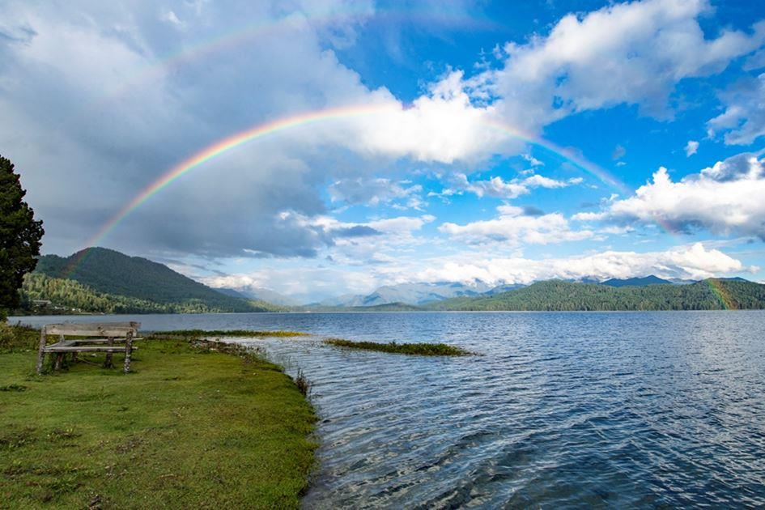
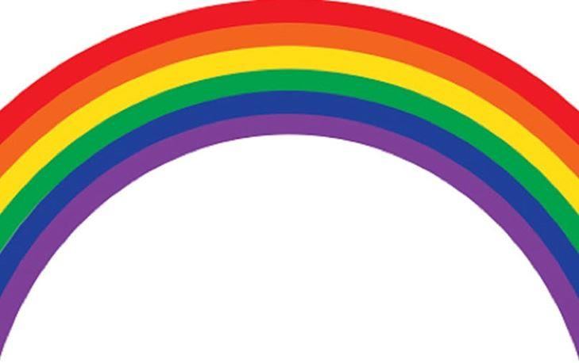
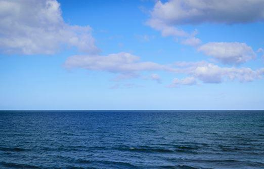
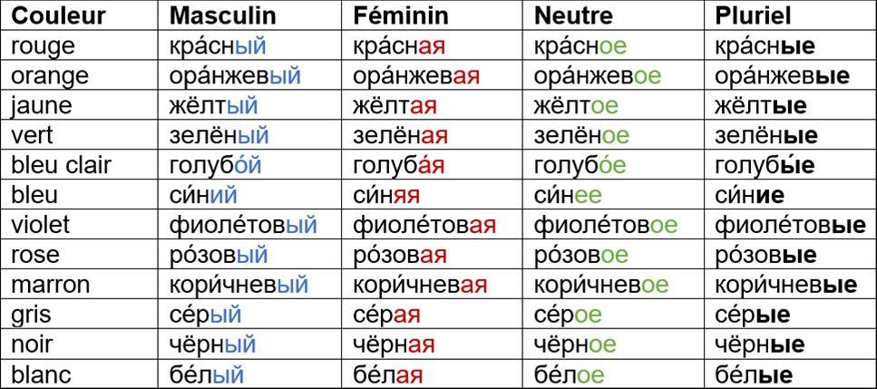
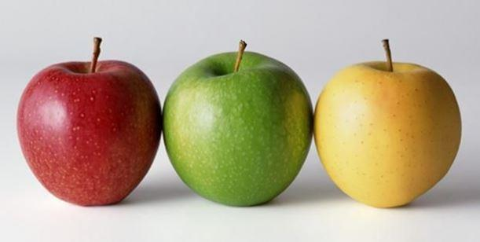
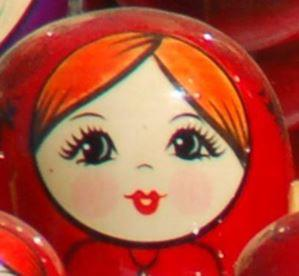

Здра́вствуйте, дороги́е чита́тели! (Bonjour, chers lecteurs !) Как ва́ши дела́? (Comment allez-vous ?) Наде́юсь, что у вас всё хорошо́. (J’espère que vous allez bien.) Наступа́ет ле́то. (L’été arrive.) У меня́ хоро́шее настрое́ние. (Je suis de bonne humeur.) А у вас? (Et vous ?) Vous pouvez répondre : - У меня́ то́же хоро́шее настрое́ние (Moi aussi, je suis de bonne humeur).
И́ли (ou) : - У меня́ плохо́е настрое́ние (Je suis de mauvaise humeur). Вы зна́ете, почему́ у меня́ хоро́шее настрое́ние? (Savez-vous pourquoi je suis de bonne humeur ?) Я смотрю́ в окно́ (Je regarde par la fenêtre), а там (et là-bas il y a) си́нее не́бо (le ciel bleu), жёлтое со́лнце (le soleil jaune), зелёная трава́ (l’herbe verte), бе́лые, кра́сные, ро́зовые и фиоле́товые цветы́ (des fleurs blanches, rouges, roses et violettes). Как краси́во! (Que c’est beau !) Наш мир разноцве́тный. (Notre monde est multicolore.) Кста́ти, вы зна́ете, как называ́ются цвета́ по-ру́сски? (D'ailleurs, savez-vous comment s’appellent les couleurs en russe ?) Commençons par les couleurs de l’arc-en-ciel. L’arc-en-ciel en russe РА́ДУГА. Вот цвета́ ра́дуги (Voici les couleurs de l’arc-en-ciel) : кра́сный (rouge), ора́нжевый (orange), жёлтый (jaune), зелёный (vert), голубо́й (bleu clair), си́ний (bleu moyen) и фиоле́товый (violet). Семь цвето́в ра́дуги (Sept couleurs de l’arc-en-ciel) : кра́сный, ора́нжевый, жёлтый, зелёный, голубо́й, си́ний, фиоле́товый.
Пе́рвый цвет – КРА́СНЫЙ (La première couleur est rouge). Savez-vous que les mots кра́сный (rouge) et краси́вый (beau) ont la même racine ? Il y a très longtemps, le mot кра́сный signifiait aussi « beau ». On peut encore trouvez ce mot utilisé dans ce sens dans les proverbes et les contes populaires russes : кра́сная де́вица (une belle jeune fille), кра́сный мо́лодец (un beau jeune homme). Et la célèbre place Rouge (Кра́сная пло́щадь) à Moscou porte son nom parce qu’elle est belle malgré la présence du Kremlin avec ses tours et sa muraille de couleur rouge sur cette place.
Второ́й цвет ра́дуги – ОРА́НЖЕВЫЙ (La deuxième couleur de l’arc-en-ciel est orange). Avez-vous remarqué qu’il ressemble au mot français ? Ça dévoile ses origines.
Тре́тий цвет – ЖЁЛТЫЙ (La troisième couleur est jaune), а четвёртый цвет – ЗЕЛЁНЫЙ (et la quatrième couleur est verte). Кра́сный, жёлтый и зелёный – э́то цвета́ светофо́ра (Le rouge, le jaune et le vert sont les couleurs des feux de signalisation). On appelle les feux de signalisation en russe светофо́р. Le feu entre le rouge et le vert est le même en France et en Russie, mais les Français le voit orange (ора́нжевый) et les Russes disent qu’il est jaune (жёлтый).
Пя́тый цвет – ГОЛУБО́Й (La cinquième couleur est bleu clair). Голубо́й – э́то цвет не́ба (Le bleu clair est la couleur du ciel). Не́бо голубо́е. (Le ciel est bleu clair). Голубо́й – э́то мой люби́мый цвет (Le bleu clair est ma couleur préférée).
Шесто́й цвет – СИ́НИЙ (La sixième couleur est bleu). Si avec le mot голубо́й on décrit uniquement le bleu clair, avec le mot си́ний on peut décrire toutes les nuances du bleu. Mais dans l’arc en ciel, c’est plutôt un bleu moyen pas trop foncé ni trop clair. On utilise aussi le mot си́ний pour décrire le ciel : си́нее не́бо (le ciel bleu). Et pour la mer : си́нее мо́ре (la mer bleue).
Седьмо́й цвет ра́дуги – ФИОЛЕ́ТОВЫЙ (La septième couleur de l’arc-en-ciel est le violet).
Како́й цвет вы предпочита́ете (Quelle couleur préférez-vous): фиоле́товый, си́ний, голубо́й, зелёный, жёлтый, ора́нжевый и́ли кра́сный? Отвеча́йте (Répondez) : - Я предпочита́ю... (Je préfère…) Наприме́р (Par exemple) : Я предпочита́ю голубо́й цвет.
А может быть, вы предпочитаете другие цвета? (Peut-être préférez-vous d’autres couleurs ?) Наприме́р (Par exemple), РО́ЗОВЫЙ (rose), КОРИ́ЧНЕВЫЙ (marron), СЕ́РЫЙ (gris), ЧЁРНЫЙ (noir) или БЕ́ЛЫЙ (blanc)?
Les mots signifiant les couleurs sont des adjectifs. Comme tous les adjectifs russes ils peuvent être masculins, féminins et neutres. Ils peuvent aussi être utilisés au pluriel. Regardez le tableau.

УПРАЖНЕ́НИЕ 1 (EXERCICE 1)
En utilisant le tableau décrivez les couleurs des objets. Par exemple : Бана́н жёлтый (La banane est jaune). Я́блоко кра́сное, жёлтое и́ли зелёное (La pomme est rouge, jaune ou verte).
Continuez avec les mots suivants : мандари́н (la clémentine ou la mandarine), лимо́н (le citron), гру́ша (la poire), сли́ва (la prune), огуре́ц (le concombre), помидо́р (la tomate), баклажа́н (l’aubergine), о́блако (le nuage), кот (le chat), соба́ка (la chienne), мы́шка (la souris).
Maintenant mettez tous les mots au pluriel. Par exemple : Бана́ны жёлтые (Les bananes sont jaunes). Я́блоки кра́сные, жёлтые и́ли зелёные (Les pommes sont rouges, jaunes ou vertes). Continuez avec les mots suivants : мандари́ны, лимо́ны, гру́ши, сли́вы, огурцы́, помидо́ры, баклажа́ны, облака́, коты́, соба́ки, мы́шки.
УПРАЖНЕ́НИЕ 2 (EXERCICE 2)
Скажи́те, э́то пра́вда и́ли непра́вда (Dites si c’est vrai ou c’est faux). Наприме́р (Par exemple) : Коты́ зелёные (Les chats sont verts). – Это непра́вда! (C’est faux !) Помидо́ры кра́сные (Les tomates sont rouges). – Это пра́вда! (C’est vrai !) A vous de continuer. Лимо́н ро́зовый. Соба́ка фиоле́товая. Гру́ши жёлтые. Мандари́ны чёрные и́ли си́ние. Не́бо голубо́е. Облака́ бе́лые и́ли се́рые. Сли́ва бе́лая. Огуре́ц голубо́й. Сли́вы си́ние и́ли жёлтые. Мы́шка зелёная. Баклажа́н фиоле́товый. Соба́ки кори́чневые, чёрные и́ли бе́лые.
Quand on parle des couleurs il y a une question très importante à connaitre. Vous avez deviné laquelle ? Oui, c’est la question « De quelle couleur ? » : КАКО́ГО ЦВЕ́ТА?
A vous de continuer. Како́го цве́та мандари́ны? Како́го цве́та я́блоки? Како́го цве́та лимо́ны? Како́го цве́та баклажа́ны? Како́го цве́та со́лнце? Како́го цве́та огуре́ц? Како́го цве́та о́блака? Како́го цве́та трава́ (l’herbe)? Како́го цве́та мы́шка? Како́го цве́та ночь (la nuit)? Како́го цве́та день (le jour)? Како́го цве́та мо́ре (la mer)?
УПРАЖНЕ́НИЕ 4 (EXERCICE 4)
Отве́тьте на вопро́сы (Répondez aux questions) :
1. Како́го цве́та у вас глаза́? (De quelle couleur sont vos yeux ?) Голубые, коричневые, чёрные, зелёные или фиолетовые? Отвеча́йте (Répondez) : У меня́ глаза́... (J’ai les yeux…) Наприме́р (Par exemple) : У меня́ глаза́ зелёные.
2. Како́й ваш люби́мый цвет? (Quelle est votre couleur préférée ?). Отвеча́йте (Répondez) : - Мой люби́мый цвет... (Ma couleur préférée est…) Наприме́р (Par exemple) : Мой люби́мый цвет голубо́й.
3. Назови́те цвета́ светофо́ра по-ру́сски (Nommez les couleurs des feux de signalisation en russe).
УПРАЖНЕ́НИЕ 5 (EXERCICE 5)
Les mots des couleurs suivantes ressemblent beaucoup aux mots français : бордо́вый, бе́жевый, абрико́совый, лило́вый, шокола́дный, оли́вковый, лазу́рный. Devinez comment s’appellent ces couleurs en français.
УПРАЖНЕ́НИЕ 6 (EXERCICE 6)
Devinez comment sont liés la phrase suivante et les couleurs de l’arc-en-ciel :
Ка́ждый охо́тник жела́ет знать, где сиди́т фаза́н (Chaque chasseur a envie de savoir où se trouve le faisan).
À la fin de cette leçon, voici une blague russe (ру́сский анекдо́т).
В магази́не (Dans un magasin):
- У вас есть помидо́ры? (Avez-vous des tomates ?)
- Вот они́! (Les voici!)
- А почему́ они́ жёлтые, а не кра́сные? (Pourquoi elles sont jaunes et pas rouges ?)
- Потому́ что они́ зелёные! (Parce qu’elles sont vertes (= pas mûres) !)
Écoutez le podcast de cette leçon, retrouvez les corrigés des exercices et entraînez-vous en chantant et en faisant des jeux et exercices interactifs sur notre site le-russe.fr dans la rubrique « Cours de russe / Méthode ». До сле́дующей встречи, Юлия. (À la prochaine rencontre, Julia.)
Partager cette page